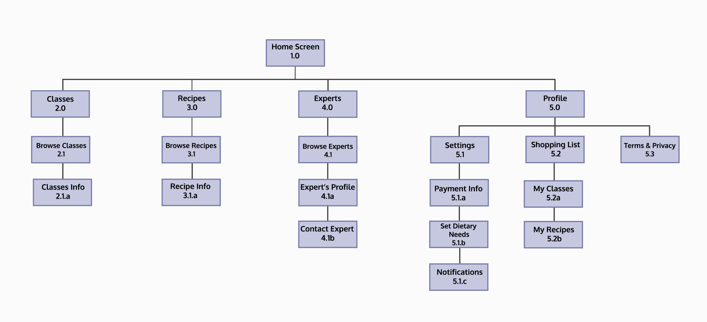

pinch of salt
View Prototype ROLE
User Researcher
UX/UI Designer
PROJECT DATE
Aug - Dec 2020
“pinch of salt” is a project I worked on during my CareerFoundry UX Design course. This app centered on providing expert knowledge from users who have no cooking experience to those who enjoy cooking on a daily basis. “pinch of salt” provides cooking classes, recipes, and an opportunity to connect with so many experts.
Problem
When it comes to the food industry, people are overwhelmed with endless pages of results for recipes and answers to questions that may arise when cooking. It is difficult for those who are in need of guidance to connect with cooking experts on the spot.
Objective
To create an intuitive app where users can contact experts with their curiosities and explore recipes and cooking classes to enhance their own skills.
User Research
1. Interest in learning new cuisines
2. Half cook to be more cost-efficient, other half enjoy cooking and experimenting
3. Important to be able to connect on-the-spot
4. Find it difficult to find recipes that accomodate dietary restrictions
5. Preference of searching for experts with genuine knowledge of dish’s culture
6. Availability of free resources like Google, Youtube, etc.
User Persona
Information Architecture
With an unmoderated, remote open card sorting, participants “agreed” on four main categories. After another closed card sorting – with the given categories, “Classes”, “Recipes”, “Experts”, and “Profile” – cards were sorted into their respective categories.
Wireframes
Low-fidelity
Mid-fidelity
High-fidelity
Usability Test Results
A remote moderated usability test was carried out with six participants over a span of a week.
Participants ranged from 25 to 46 years of age and were working professionals or students.
Positives
-
Appreciate asking for dietary needs
-
Recipes get straight to the point
-
Good to have measurement options
Errors
Difficulty finding saved information
-
Checked "Classes" tab
-
Looked through "Recipes" tab
Confusion on how to contact expert
-
Clicked on profile picture
-
Clicked "Bios" tab to speak with expert
-
Prefer to select expert, then contact option
Misrepresentation of expert's experience
-
Assumed "Amateur" pertained to self
-
"Level of Expert" screen was not clear"
Excessive steps to contact expert
-
Consolidate steps to make process shorter
-
Too many clicks
-
Felt like it took too long